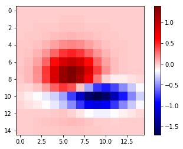
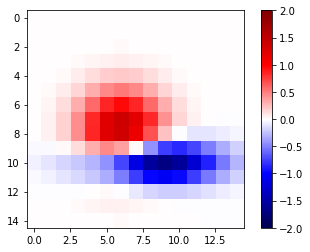
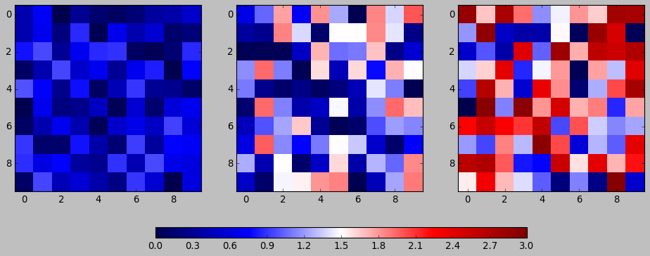
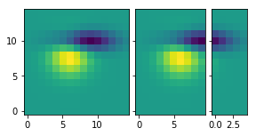
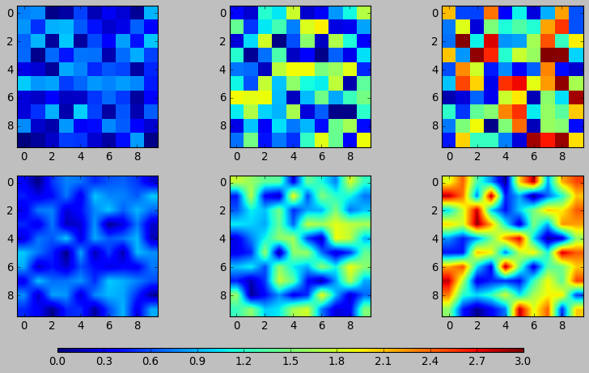

Matplotlib 第三课
Table of Contents
1 part-II, Plotting_Methods_Overviwe
# Let's get our standard imports out of the way %matplotlib inline from __future__ import print_function import numpy as np import matplotlib # matplotlib.use('nbagg') import matplotlib.pyplot as plt
1.1 The Basics: 1D series/points
1.1.1 plot vs. scatter
Some one says that, scatter is plot without lines. This is technically misconception. Because if you want a plot without lines, you still can do this using plot method. If what you really want in a situation you plot markers and color or scale them based upon some other piece of data, then scatter is the sole way to fit this requirement.
1.1.2 bar graph: ax.bar(...) and ax.barh(...)
- ax.bar(x, height, width, yerr=e):
barplots your bar vertically. - ax.barh(x, height, width, yerr=e):
barhplots your bar horizontally. - ax.bar(l, h, w, b)
- ax.axhline(location, color, linewidth): infinite long horizontal line at
location - ax.axvline(location, color, linewidth): infinite long vertical line at
location
vert_bars = axes[0].bar(x, y, color='lightblue', align='center')
draw a vertical bar with height = y, locate horizontally at = x.
horiz_bars = axes[1].barh(x, y, color='lightblue', align='center')
draw a horizontal bar with width = y, locate vertically at = x.
axes[0].axhline(0, color='gray', linewidth=2)
add a horizontal line at y = 0
axes[1].axvline(0, color='gray', linewidth=2)
add a vertial line at x = 0
. no yerr has yerr ^ . - - | +---+ . | \ | height y[0] +---+ | . | | | \ | | | . +---+ +-+-+ |- yerr | +---+ | | | . | | | | | | | | | | | | . | | | | | / | | | | | | . | | | - | - | | +---+ | | . | | | | | | | | | +---+ . | | | | | | | | | | +---+ . | | | | | | | | | | | +---+ . +---+ +---+ +-----------+---+---+---+---+---+---+---+-------> . / ^ \ |width\ . x[0] | x[1] =classic style: draw bar-left-edge at x[0]= . | . x[0] =new style: draw bar-center at x[0]=
np.random.seed(1) x=np.arange(5) y=np.random.randn(5) fig, axes = plt.subplots(ncols=2, figsize=plt.figaspect(1./2)) vert_bars = axes[0].bar(x, y, color='lightblue', align='center') horiz_bars = axes[1].barh(x, y, color='lightblue', align='center') axes[0].axhline(0, color='gray', linewidth=2) axes[1].axvline(0, color='gray', linewidth=2) plt.show()

1.1.3 fill regions: ax.fill(x, y) or fill_between(...)
- fill
- fill_between(x, y1, y2=0, color)
The curves are defined by the points (x, y1) and (x, y2). This creates one or multiple polygons describing the filled area.
1.1.4 fill regions between x-axis and f(x)
np.random.seed(1) y=np.random.randn(100).cumsum() x=np.linspace(0, 10, 100) fig, ax = plt.subplots() ax.fill_between(x, y, color='lightblue') plt.show()

1.1.5 fill regions between g(x) and f(x)
x=np.linspace(0, 10, 200) y1 = 2*x+1 y2 = 3*x+1.2 y_mean=0.5*x*np.cos(2*x)+2.5*x+1.1 fig, ax = plt.subplots() ax.fill_between(x, y1, y2, color='yellow') ax.plot(x, y_mean, color='black') plt.show()

1.1.6 stackplot graph
- stackplot
1.2 2D Arrays and Images
- ax.imshow(data, …) : Colormapped or RGB arrays
- pcolor/pcolormesh : Colormapped 2D arrays
- either
- pcolor(x, y, z)
- pcolormesh(x, y, z)
- contour, contourf, clabel: Contour/label 2D data
- contour
- contourf
- contourf + contour + clabel
1.2.1 ScalarMappable
imshow, pcolor, pcolormesh, scatter, contour and any other matplotlib methods that
map a range of data values onto a colormap are all instance of
ScalarMappable
For a ScalarMappable type instance a) you can display a colorbar for them; b) they share several keyword arguments;
1.2.2 Colorbars
Adding a colorbar to the figure to display what colors correspond to
values of data we've plotted.
mappable means can mapping from values to colors: image and contour
fig.colorbar() is a Figure method, NOT Axes method. That because
colorbar doesn't operate on the axes, like below. A colorbar will 'steal'
some space from other subplots for displaying, and if you have multiple
subplots you can steall space from them all equally.
you can define a axes to hold the colorbar:
cax = fig.add_axes([0.27, 0.8, 0.5, 0.05])
fig.colorbar(
im, # <- which image or contour you want to add a colorbar
cax=cax, # <- colorbar itself is a axes, how it looks like
orientation='horizontal' # <- orientation of value and color displays
)
. . This is *colorbar* . tells different values . This is *axes* for different colors . | | . v v . +-----------------------+ +-+ . | | | | 1.2 . | | | | 0.8 . | different | | | 0.4 . | colors display | | | 0.0 . | here | | | -0.4 . | | | | . | | | | . | | | | . +-----------------------+ +-+ .
1.2.3 colorbar inside the image
from matplotlib.cbook import get_sample_data data = np.load(get_sample_data('axes_grid/bivariate_normal.npy')) fig, ax = plt.subplots() im = ax.imshow(data, cmap='gist_earth') fig.colorbar(im) plt.show()

1.2.4 colorbar outside the image
when you want define the location and size of colorbar, you must give it a
axes, and make it the para cax of imshow():
- create a figure
- create several+1 axes
- fig, axes = plt.subplots(nrows, ncols, figsize)
- bar_axes = fig.add_axes([l,b,w,h])
- several axes for imshow of different value array
- for i, dt in dataset: axes[i].imshow(dt)
- 1 for colorbar
- plt.colorbar(im, cax=bar_axes)
fig, ax = plt.subplots() # define an axes, used for hold colorbar cax = fig.add_axes([0.27, 0.8, 0.5, 0.05]) im = ax.imshow( data, cmap='gist_earth') fig.colorbar( im, # <- which subplot you want to add a colorbar cax=cax, # <- colorbar itself is a subplot, how it looks like orientation='horizontal' # <- orientation of value and color displays ) plt.show()

1.2.5 Shared keyword arguments
| shared kwargs | |
|---|---|
| cmap | the colormap used to display the input values |
| - gist_earth; seismic | |
| vmin | minimum data value correspond to 'bottom' of colormap |
| vmax | maximum …………………….'top' of colormap |
| norm | Normalize instance to control how values map to colormap |
| default is linear scaling between vmin and vmax, but other | |
| norms are ok, eg lognorm, powernorm |
1.2.6 with out vmin vmax
import numpy as np import matplotlib.pyplot as plt from matplotlib.cbook import get_sample_data data = np.load(get_sample_data('axes_grid/bivariate_normal.npy')) fig, ax = plt.subplots() im = ax.imshow(data, cmap='seismic', interpolation='nearest') fig.colorbar(im) plt.show()

1.2.7 with vmin vmax
import numpy as np import matplotlib.pyplot as plt from matplotlib.cbook import get_sample_data data = np.load(get_sample_data('axes_grid/bivariate_normal.npy')) fig, ax = plt.subplots() im = ax.imshow(data, cmap='seismic', vmin= -2.0, vmax=2.0, interpolation='nearest') fig.colorbar(im) plt.show()

1.2.8 pcolor(pcolormesh) vs. imshow vs. scatter
Note that, imshow, can directly convert a matrix to an image by
plt.imshow('2d_ndarray')
| pcolor(pcolormesh) | imshow | scatter |
|---|---|---|
| slow | fast | resize markers |
| flexible | rigid | recolor markers |
| more than rectangular | only allow rectangular |
In short, imshow can interpolate and display large arrays very quickly, pcolor, you can use arbitrary grids so long as they're ordered in an organized fashion so that they're monotonic, they don't have to be regular.
1.3 Vector Fields
- arrow/quiver/streamplot: Vector fields
- arrow(x, y, dx, dy)
- quiver(x, y, dx, dy)
- streamplot(x, y, dx, dy)
1.4 Data Distributions
- ax.hist(dists)
- ax.boxplot(dists)
- ax.violinplot(dists)
1.5 Artist
Take the bar graph as example, if we want draw the bars below the horizontal
line with different color. We will need to catch the Artist object. Any
thing you can see in a Matplotlib figure/axes/line/bar/etc is an Artist
object. And every Artist have set(...) method, when you need do some
specific settings for certain line,bar,path,etc, you will need it.
. . *do some specific setting for ONE line/path/bar* . . ~ax.plot~ ==> *lines* --------------------+ +----> for line in lines: . A list of Line2D objects | | line.set(...) . representing the plotted data. | | . | | . | a collection of | . ~ax.bar~ ==> *BarContainer* --------------+----> *Artist*, collection ---|----> for bar in barContainer . Container with all the bars | is iterated | bar.set(...) . and optionally errorbars. | | . | | . | | . ~ax.scatter~ ==> *paths* -----------------+ +----> for path in paths . PathCollection path.set(...) . . Other similar *Artist*, not in this illustration: 1. ~ax.fill_between~ ==> *PolyCollection* A PolyCollection containing the plotted polygons.
# recolor the bars below horizontal line with different color fig, ax = plt.subplots() vert_bars = ax.bar(x, y, color='lightblue', align='center') for bar, height in zip(vert_bars, y): if height < 0: bar.set(edgecolor='darkred', color='salmon', linewidth=3) plt.show()
1.6 Data keyword argument ( the author highlight )
Brand new feature added in version 1.5 matplotlib, called "data keyword argument". Which make plotting pandas dataframe not so heavy.
When using specialized data structures such as pandas dataframe and XArray, the input data to be plotted are accessed like a dictionary elements.
. ~df['colName']~
.
. DataFrame: df
. | a | b | c |
. |----+----+----|
. | 13 | 39 | 36 |
. | 3 | 9 | 6 |
. | 32 | 96 | 93 |
. | 5 | 15 | 12 |
.
. BAD:
. ~ax.fill_between(df['a'], df['a']*2+1, df['a']*3+1.2, color = 'yellow', data=data_obj)~
.
. GOOD:
. ~data_obj = {'x' : ___ , 'y1' : ___ , 'y2' : ___ , 'mean' : ___}~
. |
. +----------------------------------------------------+
. |
. key key key v
. ~ax.fill_between('x', 'y1', 'y2', color = 'yellow', data=data_obj)~
. | | | ^ ^ ^
. | | \---------getvalue---------+ | |
. | \---------------getvalue-----------+ |
. \---------------------getvalue-------------+
This can get very repetitive and tedious as one types out a plotting command accessing those elements. So, the data keyword argument was added to many of the plotting functions in v1.5. With this feature, one can pass in a single dictionary-like object as data, and use the string key names in the place of the usual input data arguments.
x=np.linspace(0, 10, 200) data_obj = {'x' : x, 'y1' : 2*x+1, 'y2' : 3*x+1.2, 'mean' : 0.5*x*np.cos(2*x)+2.5*x+1} fig, ax=plt.subplots() ax.fill_between('x', 'y1', 'y2', color = 'yellow', data=data_obj) ax.plot('x', 'mean', color='black', data=data_obj) plt.show()
1.7 Exercise 2.1
1.7.1 exercise of fill and bar graph
import numpy as np import matplotlib.pyplot as plt np.random.seed(1) # Generate data y_raw = np.random.randn(1000).cumsum() + 15 x_raw = np.linspace(0, 24, y_raw.size) # Get averages of every 100 samples x_pos = x_raw.reshape(-1, 100).min(axis=1) y_avg = y_raw.reshape(-1, 100).mean(axis=1) y_err = y_raw.reshape(-1, 100).ptp(axis=1) bar_width = x_pos[1] - x_pos[0] # Make a made up future prediction with a fake condition x_pred = np.linspace(0, 30) y_max_pred = y_avg[0] + y_err[0] + 2.3*x_pred y_min_pred = y_avg[0] - y_err[0] + 1.2*x_pred # Just so you don't. have to guess the colors ... barcolor, linecolor, fillcolor = 'wheat', 'salmon', 'lightblue' # DONE fig, axes= plt.subplots() bars = axes.bar(x_pos, height=y_avg, width=bar_width, yerr=y_err, color=barcolor) lines = axes.plot(x_raw, y_raw, color=linecolor) regions = axes.fill_between(x_pred, y_max_pred, y_min_pred, color=fillcolor) axes.set(xlim=[0, 30], ylim=[0, 100], title='Future Projection of Attitdes', ylabel='Snarkiness (snark units)', xlabel='Minutes since class began') plt.show()

24/1000 = 0.24
x_raw: 0, 0.24, 0.48, 0.72, 0.96, 1.2 ... 24 : 1000
reshape to 10 * 1000
...... 100
......-------------------------------
row-0: 0, 0.24, 0.48, 0.72, 0.96, 1.2 ====.min ===>
row-1: 0, 0.24, 0.48, 0.72, 0.96, 1.2
row-2: 0, 0.24, 0.48, 0.72, 0.96, 1.2
row-3: 0, 0.24, 0.48, 0.72, 0.96, 1.2
row-0: 0, 0.24, 0.48, 0.72, 0.96, 1.2
row-0: 0, 0.24, 0.48, 0.72, 0.96, 1.2
row-0: 0, 0.24, 0.48, 0.72, 0.96, 1.2
row-0: 0, 0.24, 0.48, 0.72, 0.96, 1.2
row-8: 0, 0.24, 0.48, 0.72, 0.96, 1.2
row-9: 0, 0.24, 0.48, 0.72, 0.96, 1.2
x_pos.shape= (10,)
y_avg.shape= (10,) mean of row
y_err.shape= (10,) range max-min of row
num=50
........ ------
x_pred = 0 ~ 30
1.8 Exercise 2.2
colorbar with vmin and vmax
import numpy as np import matplotlib.pyplot as plt np.random.seed(1) plt.style.use('classic') # Generate random data data1 = np.random.random((10, 10)) data2 = 2 * np.random.random((10,10)) data3 = 3 * np.random.random((10,10)) # set up figure and axes fig, axes = plt.subplots(ncols=3, figsize=plt.figaspect(0.5)) fig.tight_layout() cax = fig.add_axes([0.25, 0.1, 0.55, 0.03]) # add axes for colorbar # DONE im1, im2, im3 = [ axes[i].imshow(dt, cmap='seismic', vmin=0.0, vmax=3.0, interpolation='nearest') for i, dt in enumerate([data1, data2, data3])] plt.colorbar(im1, cax = cax, orientation='horizontal') plt.show()

2 misc tools
2.1 python
2.1.1 for in zip() vs. for in enumerate()
. . | arr | dt1 dt2 dt3 . |-----| +--+ +--+ +--+ . | 4 | | 1| | 2| | 3| . | 5 | +--+ +--+ +--+ . | 6 | . ------- ---------------- . ~zip~ ==>( [4,5,6] , [1,2,3] ) . i dt . 4 + 1 . 5 + 2 . 6 + 3 . . . dt1 dt2 dt3 | arr | . +--+ +--+ +--+ |-----| . | 1| | 2| | 3| /---->| 4 | . +--+ +--+ +--+ |/--->| 5 | . ~enumerate~ => enumerateObj (can index it) ||/-->| 6 | . dt i ||| . 1 + 0 ------------/|| . 2 + 1 -------------/| . 3 + 2 --------------/ .
dt1, dt2, dt3 = 1, 2, 3 arr = np.array([4, 5, 6]) result_arr = np.random.randn(3) print (result_arr) for i, dt in enumerate([dt1, dt2, dt3]): result_arr[i] = arr[i] + dt print (result_arr[i]) for res, ele, dt in zip(result_arr, arr, [dt1, dt2, dt3]): res = ele + dt print (res)
2.2 numpy
2.2.1 numpy.cumsum(arr, dtype, axis)
Return the cumulative sum of the elements along a given axis.
| argument | return |
|---|---|
| no axis argument | return a 1-D array of cumulative sum from front to end of flattened array |
| axis = 0 | return a 2-D array of cumulative sum from front-row to back-row |
| axis = 1 | return a 2-D array of cumulative sum from left-column to right-column |
| dtype = float | change type of element to float |
a = np.array([[1,2,3], [4,5,6]])
# return a 1-D array of cumulative sum from front to end of flattened array np.cumsum(a)
array([ 1, 3, 6, 10, 15, 21])
# return a 1-D array of cumulative sum and specify data types np.cumsum(a, dtype=float)
array([ 1., 3., 6., 10., 15., 21.])
# return a 2-D array of cumulative sum from front-row to back-row np.cumsum(a,axis=0)
array([[1, 2, 3], [5, 7, 9]])
# return a 2-D array of cumulative sum from left-column to right-column np.cumsum(a,axis=1)
array([[ 1, 3, 6], [ 4, 9, 15]])
2.2.2 numpy.ptp(arr, axis, out)
Range of values (maximum - minimum) along an axis.
>>> x = np.arange(4).reshape((2,2)) >>> x array([[0, 1], [2, 3]]) >>> np.ptp(x, axis=0) array([2, 2]) >>> np.ptp(x, axis=1) array([1, 1])
2.2.3 numpy.array.reshape(-1, num)
-1 means I don't care the number of rows;
num means I only require the number of columns should be num
arr = np.arange(0, 100).reshape(-1, 10) print ( arr )
2.2.4 numpy.random
np.random.seed(num)
setup the random number generator
np.random.randn(10)
create an array of random number, with 10-elements inside
np.random.randint(num_start, num_stop)
create a random integer in range [start, stop]
np.random.random((row_num, column_num))
create an multiple dimension (row_num*column_num) array of random double in (0,1)
np.random.random((2,10))
array([[0.44688024, 0.25058039, 0.31516404, 0.65540106, 0.60013046, 0.25673085, 0.44849235, 0.62245202, 0.75876794, 0.01955568], [0.49521851, 0.48317782, 0.0923694 , 0.3201248 , 0.87163057, 0.82611117, 0.95797277, 0.98415232, 0.85615723, 0.32127401]])
2.3 matplotlib
2.3.1 plt.figure().add_axes
fig.add_axes([l,b,w,h]) is a more flexible version than
fig.add_subplot() add_axes(*args, **kwargs)
Add an axes at position rect [left, bottom, width, height] where all
quantities are in fractions of figure width and height.
. . +----------------------------------+ . | +----> figure . | left=0.4 | . |/--------------\ /-----+----> axes . | | | . | / +----------------+| . | bottom | | width=0.5 || . | = 0.5 | | || . | | | height=0.5 || . | \ | || . +----------------+----------------++ .
figx = plt.figure() figx.add_axes([0.1, 0.1, 0.5, 0.5]) plt.show()

2.3.2 plt.figure()
F = plt.figure(1, (4.5, 4.5))
F = plt.figure("1", (4.5, 4.5))
2.3.3 ImageGrid()
figure -> imagegrid -> locatableAxes -> imshow
- create a Figure
- specify the id or window's title
- specify the size of window
- create a ImageGrid(collection of locatable Axes)
- on this figure
- do partition on figure and specify the location to hold imagegrid
- do partition on imagegrid, each part is a locatable axes
- prepare the data in the form of np.array
- path or iobuffer = get_sample_data from mlp.sample_data
- np.array = np.load()
- map np.array to colormap by imshow on each locatable axes
. . [id = ~1~ ] . +------------------------------------+ . | default | . |------------------------------------| . | |\ . | | + . | | | . | | | . | | | . | | | 4.5 | F = plt.figure(1, (4.5, 4.5)) . | | | . | | | . | | | . | | | . | | | . | | + . | |/ . +------------------------------------+ . \----------------------------------/ . 4.5 . . . +------------------------------------+ | grid = ImageGrid(F, 211, # similar to subplot(111) . | default +---+--- nrows_ncols=(1,3) | nrows_ncols=(1, 3), . |-------------------------------/----| | axes_pad=0.1, . |.-----------+-----------+-----+----.| | add_all=True, . || | | || | label_mode="L", . || | | || | ) . || white | white | white || subplot(2,1,1) . || locatable | locatable | locatable|| . || axes | axes | axes || # ~grid = ImageGrid(F, 211, # similar to subplot(111)~ . |+-----------+-----------+----------+| # F -> add ImageGrid on figure 'F' at *location*: . || || # 1 -> 2 row . || || # 1 -> 1 column . || || # 1 -> *index* of rowNum * colNum = 1 . || || . || \ || . |.---------------------------------\.| . .-----------------------------------\. . \ subplot(2,1,2) . . . +------------------------------------+ | im1 = Z . | default | | im2 = Z[:, :10] . |------------------------------------| | im3 = Z[:, 10:] . |.------------------+----------+----.| | vmin, vmax = Z.min(), Z.max() . || im1 .. | im2 |im3 || | for i, im in enumerate([im1, im2, im3]): . || .......... | .. | . || | print (i, im) . || .... ... | ... | .. || | ax = grid[i] . || ........ | . | || | print ( "ax type: ") . || . | . | || | print (type(ax) ) . |+------------------+----------+----+| | ax.imshow(im, . || || | origin="lower", . || || | vmin=vmin, vmax=vmax, . || || | interpolation="nearest") . || || . || || # imshow will give different locatable axes . |.----------------------------------.| # different size according to nparray size, . .------------------------------------. # and different image according to imshow .
import matplotlib.pyplot as plt from mpl_toolkits.axes_grid1 import ImageGrid def get_demo_image(): import numpy as np from matplotlib.cbook import get_sample_data f = get_sample_data("axes_grid/bivariate_normal.npy", asfileobj=False) z = np.load(f) # z is a numpy array of 15x15 return z, (-3, 4, -4, 3) F = plt.figure(1, (4.5, 4.5)) grid = ImageGrid(F, 111, # similar to subplot(111) nrows_ncols=(1, 3), axes_pad=0.1, add_all=True, label_mode="L", ) Z, extent = get_demo_image() # demo image im1 = Z im2 = Z[:, :10] im3 = Z[:, 10:] vmin, vmax = Z.min(), Z.max() for i, im in enumerate([im1, im2, im3]): print (i, im) ax = grid[i] print ( "ax type: ") print (type(ax) ) ax.imshow(im, origin="lower", vmin=vmin, vmax=vmax, interpolation="nearest") plt.draw() plt.show()

2.3.4 plt.subplots()
plt.subplots( 1. nrows=1, #<- number of rows in figure 2. ncols=1, #<- number of columns in figure 3. figsize=plt.figaspect(0.5) #<- figaspect will return a tuple )
2.3.5 plt.figaspect(ratioBetweenHeightAndWidth)
. . tall / wide = 0.5 . | . v . plt.figaspect(0.5) will return a tuple (default_size, default_size*0.5) . ------------ ---------------- . figwidth figheight .
2.3.6 ax.imshow(arr, vmin, vmax, interpolation)
interpolation='nearest' will make the unit size(1,1) the same color.
2.3.7 interpolation
# figure and n+1 ax fig, axes = plt.subplots( nrows=2, ncols=3, figsize=plt.figaspect(0.5) ) cax = fig.add_axes([0.2, 0.01, 0.6, 0.01]) # get data in form of np.array data1 = np.random.random((10,10)) data2 = 2*np.random.random((10,10)) data3 = 3*np.random.random((10,10)) data4 = np.random.random((10,10)) data5 = 2*np.random.random((10,10)) data6 = 3*np.random.random((10,10)) # interpolation='nearest' for ax,dt in zip(axes[0,:], [data1, data2, data3]): im = ax.imshow(dt, vmin=0.0, vmax=3.0, interpolation='nearest') # without interpolation for ax,dt in zip(axes[1,:], [data4, data5, data6]): im2 = ax.imshow(dt, vmin=0.0, vmax=3.0) plt.colorbar(im, cax=cax, orientation='horizontal') plt.show()
